What are UV Maps?
UV Maps are a solution to the following problem: How do we put images onto the surfaces of 3D models?
Introduction
To begin, some clarifications. UV maps are also referred to as texture maps, UV Coordinates, or Texture Coordinates. There are other terms that are used, but most of them are various combinations of the following words:
- UV
- Texture
- Map
- Coordinate
This article will slide between the different terms as we define and explore their related concepts..
Creating UV Maps is done through a process called unwrapping or, depending on the context, projection. How to give a model UV coordinates or create textures is not in the scope of this article. In other words, this is not a software tutorial.
Why Do We Need UV's?
Rendering 3D Graphics is hard. It's really hard! In 3D worlds, large and complex scenes require a lot of detail. Every face, every belt buckle, every crack in the pavement, every button on every jacket needs to be a 3D shape. This is computationally expensive to render out.
Enter: Textures. What if we could just slap an image on a 3D model? We could include small details - like jacket buttons - on the image, and stick it on a plain cube. We get to see lots of nice detail, and the computer doesn't have as many 3D shapes to render. Everyone wins!
Textures allow us to reduce the number of polygons the rendering engine needs to draw significantly.
I'm sure you've seen the effect:

Oddjob, from Goldeneye
Modeling a 3D face is hard! But taking a photo of a real face and sticking it on a 3D model? That's easy. And basically just as good.
We use this trick all the time in 3D modeling!
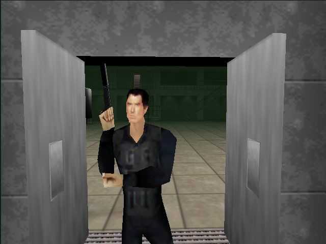This is recognizably Pierce Brosnan as James Bond! In a game from 1997, running on a Nintendo 64!
If we didn't have 3D coordinates, the walls and doors here would have to be solid colors. They're flat objects, it would be a waste to add mesh geometry just to color things differently. We really do want to just apply an image onto the flat surface of my 3D model.
UV Maps allow us to apply 2 dimensional images onto the surfaces of 3 dimensional shapes.
UV Maps are the connection ("map") between the world of 3D meshes and the world of 2D images.
A Less Boring Cube
Say hello to my friend, this boring cube
Let's say we want to make it look better, using an image file. Games need wooden crates to smash up, so let's use this image:

We want to apply it to our cube. In this case, we want to paint it onto each of the 6 faces of our cube. like this:
How do we do that?
 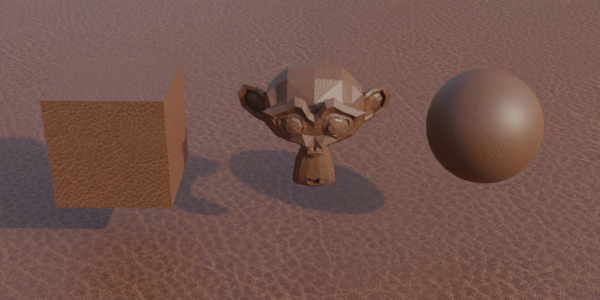
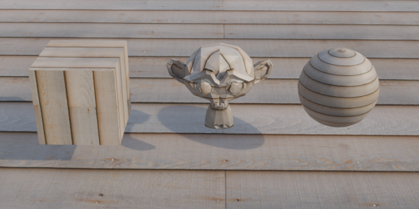
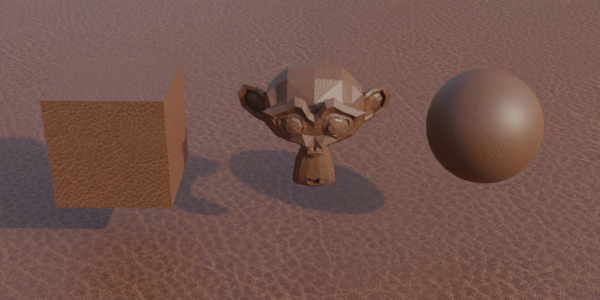
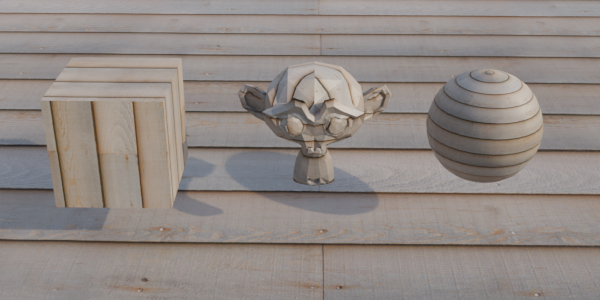
The same scene rendered with different image textures.
Introducing UVs
Let's start with a single point in space.
We will follow the standard convention of using red, green, and blue for x, y, and z; respectively. It's easy to remember, just think of the acronyms rgb and xyz. They line up.
You can click and drag on this example.
I've given the orange point the arbitrary coordinates of (1,2,3). That mean's it's position on the x-axis is "1", on the y-axis is is "2", and on z-axis is "3".
This point has 3 number values, which are positions on number lines in a cartesian coordinate system. Now it's time for the big trick... Let's give the point two more numbers.
The same object - the same little blob of data on our computer - that is storing the numbers "x","y", and "z", we will give it two more numbers to hold on to. These new numbers will also be positions on number lines. This new coordinate system will only have two dimensions.
We need to label these new axes. X and Y make sense, but the letters "X" and "Y" are already being used! So we can't use those. How about "z" or "w"? Nope, also taken! Let's move the other direction in the alphabet... How about U and V?
That's right, The "UV" in UV Maps doesn't stand for anything. UV isn't an acronym. U and V are just the next arbitrary letters that we use to label axes in a coordinate system.

Mathematicians searching for more letters to give arbitrary meaning to.
Calling uv maps "UV's" is a lot like calling 3D spaces "XYZ's". XYZ's is somewhat stupid sounding, and clumsy to say - but UV rolls off the tongue. Perhaps UV is also kind of a silly name. Regardless, we're all used to it.
Maybe this is why many artists prefer to call them "Texture Coordinates" instead. U and V are the coordinates in "texture coordinates".
Same Data, Different View
I find it helpful to think of points as rows in a spreadsheet, and the various values they store as the columns. This is, more or less, what the computer is doing. Many types of data, like 3D models, are basically just fancy spreadsheets or databases.
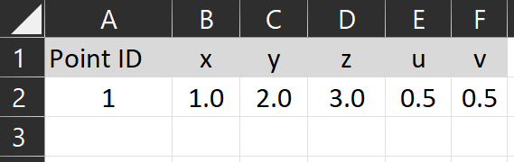Like a spreadsheet, these numbers only have significance when we give them significance. A 3D file is just data, and UVs are just these numbers stored as part of the 3D model.
With our fancy new UV coordinate, we can now plot the same point in a 3D space, and in a 2D space.
We often think of points as being "in" space. The point is "in" the XYZ space above, and it's "in" the UV space above. But on computers, this thinking isn't quite right.
This is why I find the spreadsheet view helpful. Like the drawings, it's another representation of the data. It's a table that shows the values directly. When we make spreadsheets, we can create many other representations of the data: charts and graphs and so on. As a way of thinking, it reinforces this separation of "data" as just some numbers, and systems that use this data (like plotting it as a point on a coordinate system).
So in our example, we didn't draw two separate points that are linked. Instead, we drew the same point (the same data), but shown in different ways. Above on the left, it's XYZ coordinates are shown in one 3D coordinate system. On the right, its UV coordinates are shown in a 2D coordinate system, and above those, it's U, V, X, Y, and Z points are shown in a table.
Now that we have the UV coordinates, what do we do with them?
Sampling Textures
An image that we pull the colors from to "paint" onto a 3D model is called a texture.
We can use the UV coordinates to look up the value of whatever color is at that coordinate in an image. This lookup process is called sampling.
We could use the U and V values as the x/y position of the pixel in an image. Say we have an image that is 512 pixels wide and 512 pixels tall. If we wanted to get the color of the pixel in the center, we would look for the color of the pixel at position u:256, v:256 in the image. That's basically the long and short of sampling. It's looking up a specific color at some location in an image.
As you might expect, there are a lot of complications that I am glossing over. See the further reading section below.
However, there are some drawbacks to this approach. The biggest is that it makes it very difficult to switch images if they are a different resolution. Let's say I'm remaking Goldeneye N64, and I want to replace the Pierce Brosnan face texture with a new better image - perhaps one of Daniel Craig - but the new image is 2000 pixels wide and 1500 pixels tall. I would have to update all of my UV values! UV values are stored with the model, not the texture.
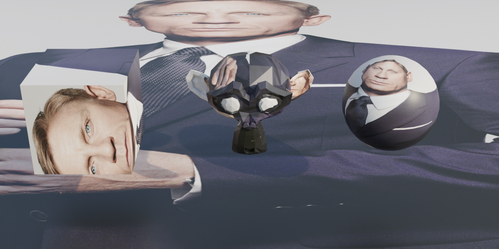Non-square images can lead to the images being distorted. Daniel Craig is not actually this wide.
Similarly, consider is if the same image has different versions with different resolutions. Many games have multiple sizes of a texture at different sizes, for performance reasons. You can sample smaller textures for models that are further away from the camera. The texture detail wouldn't appear in the final rendered image anyway.
We need a way to sample textures, using the UV coordinates, that is independent of the image resolution.
The solution is percentages. (And a bit of math called interpolation). Instead of U or V being the direct coordinate of the pixel of the texture, it's a percentage along the length or height of the image.
Let zero be the bottom (and left) of the image, and one be the top (and right). With UV coordinates between 0 and 1, we can sample anywhere on the image. So long as we don't swap images out with one of a different aspect ratio, everything will behave as expected.
With our example point from above, the UV coordinates were u: 0.5 and v: 0.5. Conveniently for our example, this is just the center of the image. If we "sample" this point, shown in orange on the bottom left, we can apply it to that point, as shown below, right.
Repeat this sampling process for all the points we need to sample, for all the models we need to sample, and we have our scene.
This is why textures are square. Having a 1:1 aspect ratio prevents the textures from looking squashed or stretched. We can freely swap the texture on any model with any other texture, so long as they are square.
Try this interactive demo of sampling. Hover your cursor over any face in the 3D scene to display it's corresponding UV coordinate, and the sampled color from the texture.

Editing a face's UV coordinates visually, in the 3D modeling software Blender. There's nothing that says UV coordinates cannot overlap - we often use the same part of a texture for multiple parts on a model. UV's are just numbers, they don't know any better.
Wrap Modes
What happens when the UV values in the model are less than 0 or larger than 1? The behaviour for handling this situation is called the "wrap mode". We will cover it elsewhere. For now, let's assume our coordinates are "appropriately" between 0 and 1, and we can easily look up the locations on our texture.
Ways to use Textures
Broadly speaking, there are two ways to use textures. Either as a bespoke texture for a specific 3D model, or as a general purpose texture that one could use on a variety of models.
Bespoke Textures
"Bespoke" isn't an industry term, in practice these would simply be referred to as "textures". When we are in the context of actually using them, there is no need to identify these textures as specific for a model. In practice, they will likely have certain naming convention to match the model they are used with. They may also get saved with or even embedded in the 3D model file. Only in an article like this one, which taking a high level look at textures, is it useful to have some term to separate them from repeating textures. "Bespoke" is apt, because it makes me think of tailors.
The game Minecraft has a very simple 3D model for the characters, and it colors the entire model from a single image texture.
You'll note that a lot of the image is empty. This is wasted space! Minecraft can get away with it, however, because at 64x64 pixels, these are very small images. Not that much file space is actually being wasted, when all is said and done. For games where thousands of 8k images textures can make up the bulk of the games file size, efficient "texture packing" is very important.
Here's an example from a much higher resolution game:
Repeating Textures
If you go to a website to get textures for your models, like polyhaven.com or textures.com, you won't see a lot of batman's staring at you. You'll see a lot of ... spheres?
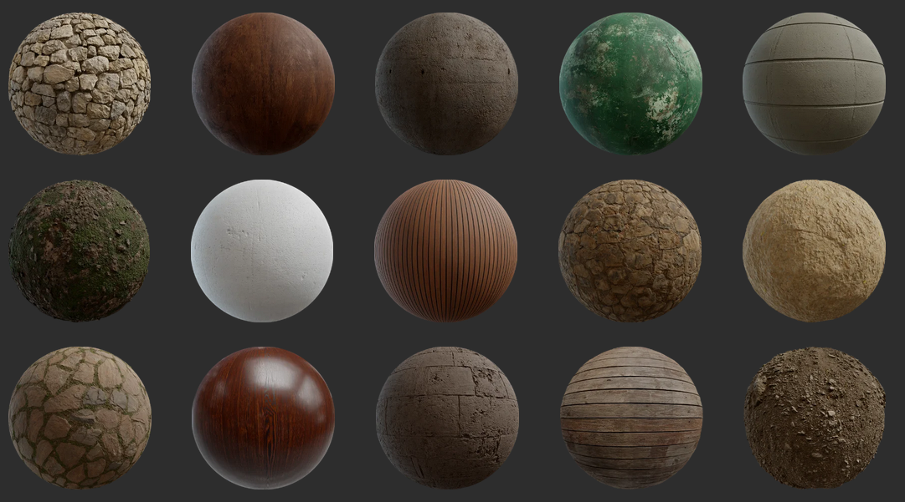Texture preview images on polyhaven.com
These are repeating textures. They are images that can be tiled next to each other in a repeating pattern, and there won't be any obvious seams.
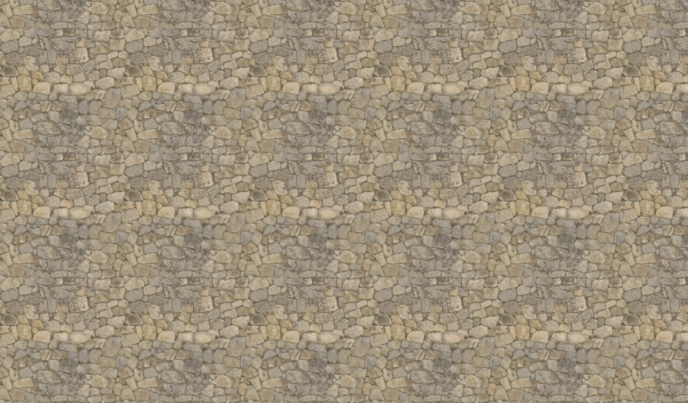Stone Wall diffuse texture map, repeated.
If we zoom out, we can see the repetition of the texture. Repeating textures are incredibly useful! Without them, we might need a ridiculous amount images to fully cover my roads in concrete, my walls with stone, my houses with bricks, and my grass with... grass. Thanks to repeating textures, I can paint my entire world while using far fewer images.
All that stuff basically looks the same anyway. and once you add in-scene lighting, it can be near-impossible to tell
Repeating textures, can be created and used independently of the 3D model. Many 3D artists and game developers slowly collect a personal "material library" of assets as they create or acquire them, full of useful textures that they can reuse between projects.
Take a look at any piece of gameplay from World of Warcraft. World of Warcraft uses repeating textures extensively to color its incredibly massive world. In just about any screenshot or gameplay clip you can probably spot a few if you look closely.
UV as Color Palettes
Another fun approach is to use UV's and texture even when the model uses a solid-color look.
This Video explains one way to do this process in Blender, and this video explains an approach that uses Blender into Unity. Most artists I know do things a little differently than these videos.
Multiple Textures
Just as complicated meshes are made up of many smaller meshes, we can have the shapes sample different textures. On a human model, the face may sample one bespoke image texture, while clothes are sampling a generic or repeating fabric texture that is used throughout the project.
More than just color data
If we look at the Stone Wall texture from above, you'll notice there are more textures than just the color (often called 'diffuse' or 'albedo') available to use. Once a model has UV maps, we can use them for all sorts of clever reasons. What these other texture maps are and what they specifically do is out of scope of this article.
Rendering engines have all sorts of settings to fiddle with when simulating how light bounces off of a surface. Some of these 'material properties' are Color, Roughness, Shininess, Transparency, Height Offsets, Bumpiness, Normals, Ambient Occlusion, and light emission. This is not an exhaustive list.
These texture maps are usually black & white. Color data is stored as 3 or 4 values (red, green, blue, and sometimes transparency) but, for example, roughness is represented as a single value between 0 (smooth) and 1 (rough). Viewed as an image file, it should then be no surprise that it looks black and white.
 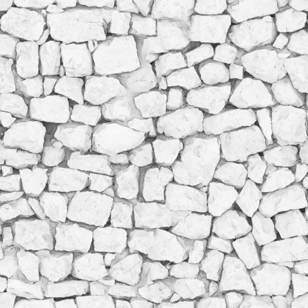
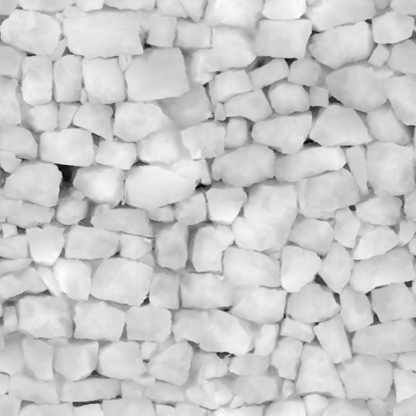
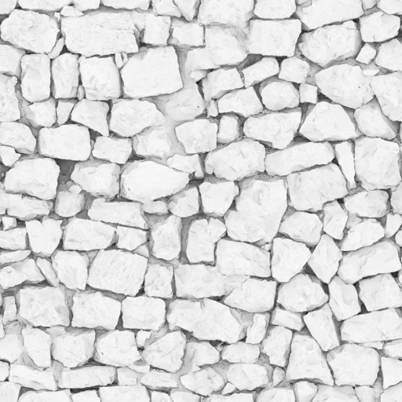
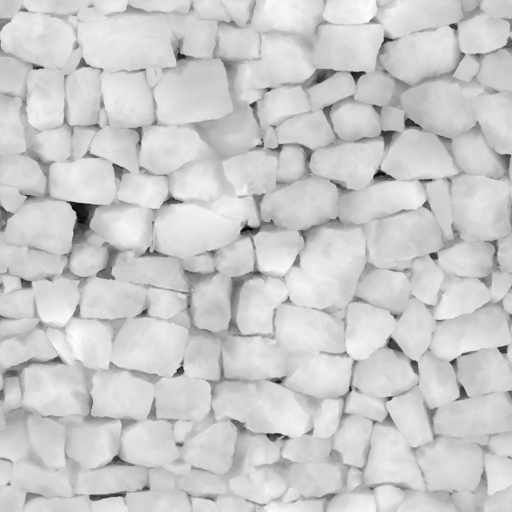
Roughness
Ambient Occlusion
Displacement
Sometimes multiple maps are stored together in a single image, where occlusion might be the red value of the image, roughness will be the green value of the image, and metallic-ness might be the blue value. These odd textures may be basically meaningless when viewed as RGB images, but none of that matters to the rendering engine, which just wants some number values to use somewhere in its calculations. Other times the R,G and B values are all used, but their represent something other than color. Normal maps use the RGB coordinates as directions defined as an XYZ value (an arrow pointing from 0,0,0 to some xyz point)
An "ARM" ambient-roughness-metallic map. Not very meaningful to the human eye.
A "Normal" or "Bump" map. The normal vector of a flat surface (x:0,y:0,z:1) is forward. Stored as the color value (r:0,g:0,b:1), blue.
This is why the mostly-flat parts of the normal map are mostly blue.
"Color" is perceived, so can call them color, we also call them "Base Map", "Base Color", "Diffuse" (as in neutral lighting conditions) or "Albedo" (a measure of reflectivity).
Materials
In software like Unity, Blender, or Unreal a material is the collected settings of all this surface rendering data - it tells the model which images to use. It's stored separately from a 3D model. A material, then, is a collection of rendering settings and texture maps conveniently packaged up. This lets us re-use materials for different models, like with repeating textures.
While software can differ wildly, one will notice commonalities. For example, assigning images as texture maps to be sampled by the rendering engine. Even though Blender, Unreal Engine, and Unity all have very different UIs, they are all able to assign image textures to various material properties.
A material editor In Blender, with various image textures being assigned to their respective properties.
Unity Material inspector. Textures are assigned to various "map" properties.
Unreal Engines Material editor. Various texture maps or numeric values have been assigned in a node tree.
Note, like Blender and Unreal, Unity also has a visual node-based editor, called Shader Graph.
Unwrapping
Creating UV coordinates for a 3D model is called unwrapping that model. The term is apt, as we often think of textures like wrapping paper around a box, which can be 'unwrapped' from the 3D box and flattened to a piece of paper again.
Remember, UV Coordinates data is part of a 3D mesh file. UVs are just the coordinate values. The images being sampled are independent, usually stored as separate files, and can be swapped around.
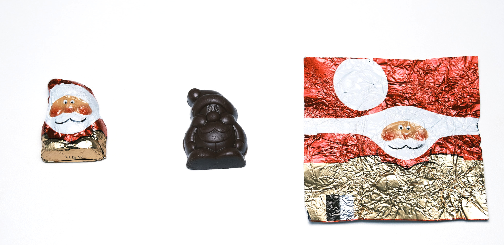In the example image above, the chocolate would be the 3D model, and the foil the texture. We - quite literally - are able to unwrap it to a 2D shape that can fit onto a texture.
As mentioned before, how to unwrap a model will not be covered here.
Vocab Reassessment
As mentioned above, the jargon around UVs are frustratingly flexible. A range of processes and techniques can all get bundled under the same few terms.
- UV - The 2D texture coordinate data stored with the mesh as numerical values, labeled "u" and "v" for the x and y coordinates of an image.
- Texture - An image file that contains data (that may or may not be visual/color data). We sample from the texture at the UV coordinates and apply the data to our model appropriately
- Map - A connection between coordinate systems that allow us to locate the same elements in both 3D xyz space and 2D uv space. Image files are often called "image maps" or "texture maps", as 2D paper representations of 3D geographic spaces are called maps.
- Coordinate - The specific location in 2D (or 3D) space. In context, refers to the literal UV values stored with the model, and not the textures.
For what it's worth, I do prefer the term "Texture Coordinates" over "UV Maps". As an educator, I appreciate having more self-defining vocabulary that requires less context to interpret.
Further Reading
- The Changing Shape of Cinema: The History of Aspect Ratio by FilmmakerIQ On Youtube.
- Blender Manual page on Using UV Maps
- Resizing Images by Computerphile on YouTube. Serves as a nice introduction to sampling algorithms.
- Wikipedia: Mipmaps
- The Unity Manual page on supported formats for textures.
Assets Used
- Wood Crate by Luke.RUSTLTD, published CC0 at opengameart.org
- UV Test grid image generated from Blender.
- Examples created with ThreeJS, Babylon.js, and ZDog with zfont plugin.
- Font in some diagrams is Fredoka One.
- Minecraft Character 3D model I used in a gif came from a friend, presumably either a direct rip from the game files or one cloned to be the same.
- The batman minecraft skin was the one on my old minecraft account when I logged in. It appears to be originally created by user halucid from planetminecraft.com.
- Santa chocolate photo by myself, feel free to use for UV explainers elsewhere. They are Solid Santa Minis from Riegelein Confiserie. I bought them off of amazon and were past their best buy date when they arrived. I don't recommend doing that.
- Stone Wall texture by Charlotte Baglioni and Dario Barresi. Published under CC0 at Polyhaven.com
- Website created in plain old HTML, with some css from cutestrap.